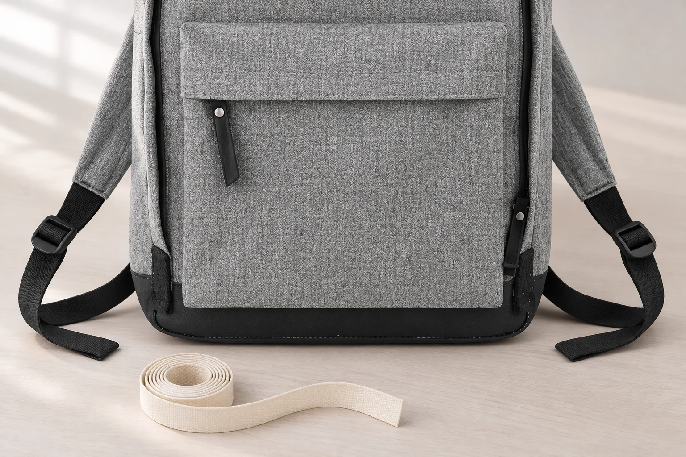
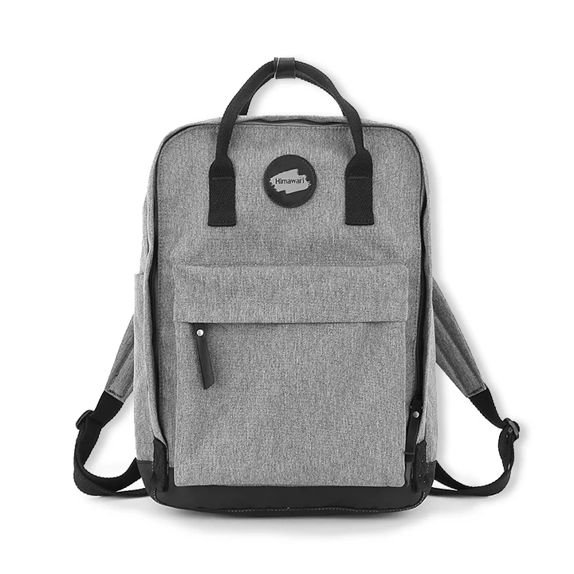

회색 백팩의 잔무늬, 얼룩으로 보기 전에 비교할 것
회색 백팩을 가까이 보니 밝은 바탕 사이로 짙은 점과 가는 선이 보입니다. 멀리서 볼 때에는 한 가지 회색이었는데 가까이 다가가니 표면이 고르지 않은 것처럼 느껴집니다. 곧바로 닦아야 하는 자국으로 보기 전에 같은 원단이 쓰인 다른 부분과 비교해 보세요. 가방의 색 이름이 그레이라는 사실만으로 표면까지 균일한 한 가지 색이라고 정할 수는 없습니다.
No.1084H 그레이의 실제 상품 사진에서는 앞 몸판과 앞 포켓, 양옆의 회색 끈에 밝고 짙은 결이 반복됩니다. 검은 바닥과 손잡이에는 회색 몸판과 다른 색과 표면이 보입니다. 이 글은 개별 제품의 얼룩이나 불량을 사진으로 진단하는 안내가 아닙니다. 공개 제품 사진에서 원래 보이는 무늬와 내가 새로 발견한 흔적을 어떤 자료로 나눠 확인할지 살펴보는 관찰 기록입니다.
앞 몸판과 포켓에서 반복되는 모습부터 봅니다
가방 앞면의 한 점만 크게 보면 주변 원단과 어떤 관계인지 알기 어렵습니다. No.1084H의 실제 정면 사진을 넓게 보면 같은 회색 계열의 잔결이 몸판과 앞 포켓에 걸쳐 보입니다. 포켓의 면이 접히거나 빛을 받는 방향에 따라 밝기는 달라져도 작은 밝고 짙은 부분이 섞여 있다는 특징을 함께 찾을 수 있습니다.
이런 반복을 보았다고 원단의 제조 방법까지 알아낸 것은 아닙니다. 서로 다른 색의 섬유를 어느 비율로 섞었는지, 실을 어떻게 짰거나 물들였는지 알려면 별도 자료가 필요합니다. 사진을 보며 쓸 수 있는 말은 작은 회색 결이 반복된다는 정도입니다. 생산 공정을 추측해 제품의 특징으로 소개하거나 어떤 소재라서 얼룩이 생기지 않는다는 설명으로 넓히지 않습니다.
같은 가방에서도 검은 바닥과 회색 몸판을 직접 비교해 얼룩 여부를 정하기는 어렵습니다. 처음부터 다른 색과 부위이기 때문입니다. 비교할 곳은 회색 앞 포켓과 그 옆의 회색 몸판처럼 비슷한 바탕을 가진 면부터 고릅니다. 이때도 포켓이 몸판에 만드는 그림자는 작은 점의 반복과 분리해서 봅니다. 봉제선 바로 아래에 생긴 어두운 띠 하나를 원단 전체의 색으로 읽지 않습니다.

가까이 찍은 사진에는 주변 면을 남깁니다
실제로 쓰는 백팩에서 낯선 부분을 발견했다면 먼저 가방 전체에서 위치를 확인합니다. 다음 사진에는 그 부분과 주변의 같은 원단을 함께 넣어 봅니다. 아주 작은 점만 화면 가득 찍으면 무늬가 여러 곳에 반복되는지, 특정 부분에만 넓게 남았는지 비교할 바탕이 사라집니다. 가까운 사진은 주변을 포함한 사진 다음에 추가할 자료입니다.
사진을 찍기 전에 젖은 천으로 문지르면 처음 발견한 상태와 달라질 수 있습니다. 자국인지 무늬인지 아직 모른다면 제품 관리 안내를 읽기 전에 세정부터 시작하지 않습니다. 먼지가 묻은 것처럼 보이더라도 어느 부분을 보았는지 남긴 뒤 확인할 수 있습니다. 사진을 잘 보이게 하려고 표면을 긁거나 끈을 세게 펴는 동작도 필요하지 않습니다.
같은 자리에서 가방의 방향만 조금 바꾼 사진을 볼 수 있습니다. 빛이 비스듬히 닿으면서 생긴 밝은 면과 그림자가 이동하는지 확인할 단서입니다. 다만 조명을 바꾸니 덜 보인다는 이유만으로 실제 흔적이 없다고 결론 내리지는 않습니다. 촬영 거리와 초점을 달리한 사진도 서로 다른 크기의 결을 보여주므로 사진마다 무엇을 바꾸었는지 함께 기억해 둡니다.

같은 그레이라는 이름보다 같은 모델과 옵션을 맞춥니다
다른 모델의 회색 백팩 사진은 내 가방의 원래 표면을 확인할 기준으로 쓰기 어렵습니다. 그레이라는 이름이 같아도 색과 결이 같다는 뜻은 아닙니다. No.1084H를 보고 있다면 같은 모델의 그레이 옵션이 맞는지 먼저 확인합니다. 대표 사진이 여러 색의 착용 장면을 함께 보여주는 경우에는 지금 선택한 옵션과 연결된 사진을 찾습니다.
No.1084H 그레이의 확인된 사양에는 겉감과 안감이 모두 폴리에스터로 적혀 있습니다. 이 표기는 섬유 정보를 확인할 자료입니다. 실제 사진 속 작은 점이 어떤 방식으로 만들어졌는지나 현재 가진 가방의 특정 흔적이 무엇인지를 판정하는 자료는 아닙니다. 소재 이름과 표면을 보여주는 사진은 서로 다른 질문에 답한다는 점을 남겨 두면 좋습니다.
참고할 사진의 나이도 확인합니다. 오래 사용한 가방의 사진은 그 가방의 현재 상태를 보여줍니다. 원래 잔무늬와 사용 중 생긴 흔적이 함께 있을 수 있으므로 새 제품의 바탕 무늬를 확인할 유일한 자료로 삼지 않습니다. 판매처가 제공한 같은 옵션의 사진과 현재 가방의 사진을 나란히 두고 어느 부분이 다르게 보이는지 구체적으로 짚어 보는 편이 낫습니다.
문의에는 판정 대신 보이는 범위를 적습니다
설명하기 어려울 때는 불량이라는 결론보다 위치와 모양을 적어 보세요. 앞 포켓의 오른쪽에만 넓은 어두운 부분이 보이는지, 몸판 여러 곳에서 같은 작은 결이 보이는지처럼 비교한 범위를 남깁니다. 언제 처음 보았는지 알면 그 시점을 덧붙이고 기억나지 않는 원인은 추측해서 채우지 않습니다. 사진과 문장의 위치가 맞아야 판매처도 같은 부분을 확인하기 쉽습니다.
No.1084H의 외부 크기 28.5 × 39 × 12cm는 가방의 규모를 비교할 사양입니다. 작은 흔적의 크기를 이 외곽 치수에서 비례로 계산하지는 않습니다. 크기를 설명해야 한다면 가방 표면을 누르거나 가리지 않는 방식으로 확인하고 단위와 기준을 함께 적습니다. 온라인 사진을 확대해 얻은 값은 실측값처럼 전달하지 않습니다.
원래 무늬인지 추가 확인이 필요한 흔적인지 답변을 받은 뒤에는 해당 제품의 관리 안내로 돌아갑니다. No.1084H의 현재 안내는 부드러운 천으로 부분 관리하고 그늘에서 건조하는 방법을 제시합니다. 구체적인 세정 제품이나 처리 방법은 그 범위를 확인한 다음 선택할 내용입니다. 잔무늬가 있는 회색 가방을 고를 때에도 작은 결을 모두 지워야 할 대상으로 보지 않고 실제로 반복되는 표면이 마음에 드는지를 함께 살펴볼 수 있습니다.